3-axis Cartesian CNC
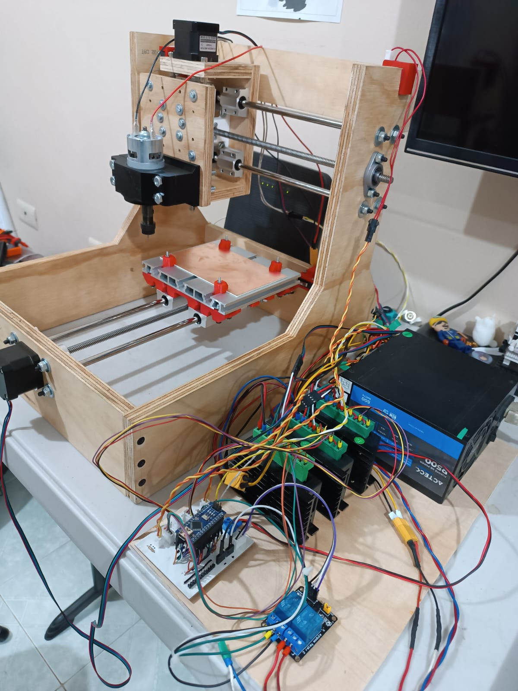
Objective
Design and develop a 3-axis Cartesian CNC milling machine capable of machining soft materials with high precision. The system includes a custom mechanical structure, an embedded motion controller, and a desktop application that enables manual control of the machine and execution of G-code programs.
Technologies Used
• SolidWorks – Mechanical design and 3D CAD modeling.
• MATLAB – Development of the graphical user interface (GUI) for machine control and G-code execution.
• KiCad – Custom PCB design for the CNC motion controller.
• C – Firmware development for the microcontroller.
• Microchip Studio – Embedded software development and debugging.
• G-code – CNC machine programming and toolpath execution.
My Contributions
• Developed the embedded firmware in C to control the motion of the three axes.
• Designed the custom PCB responsible for motor control and system integration using KiCad.
• Developed a MATLAB-based GUI for manual axis control and G-code loading and execution.
• Integrated the mechanical, electronic, and software subsystems into a fully functional CNC platform.
• Implemented software and firmware safety features to prevent the machine from exceeding its workspace limits.
Technical Highlights
• 3-axis Cartesian CNC architecture.
• Custom-designed motion control PCB.
• Embedded firmware for coordinated multi-axis motion control.
• Desktop application with an intuitive interface for machine operation and G-code execution.
• Software-defined travel limits for safe operation.
• Designed for machining wood, plastics, and phenolic (Bakelite) materials.
• Modular mechanical and electronic design for future upgrades.
Design Phase
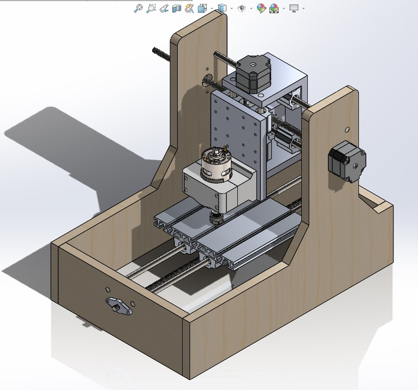
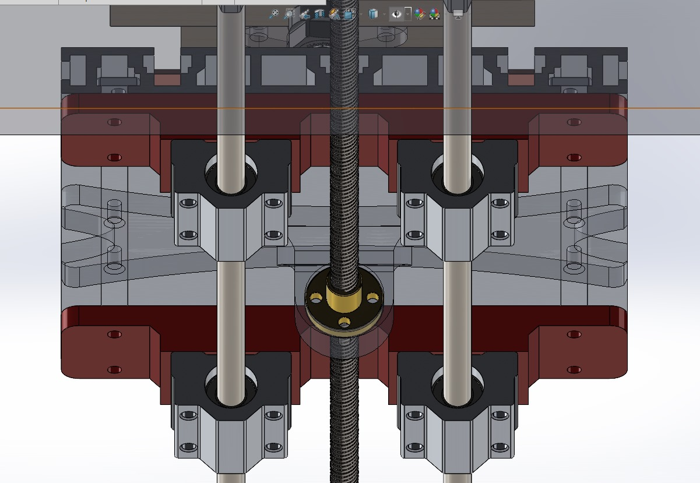
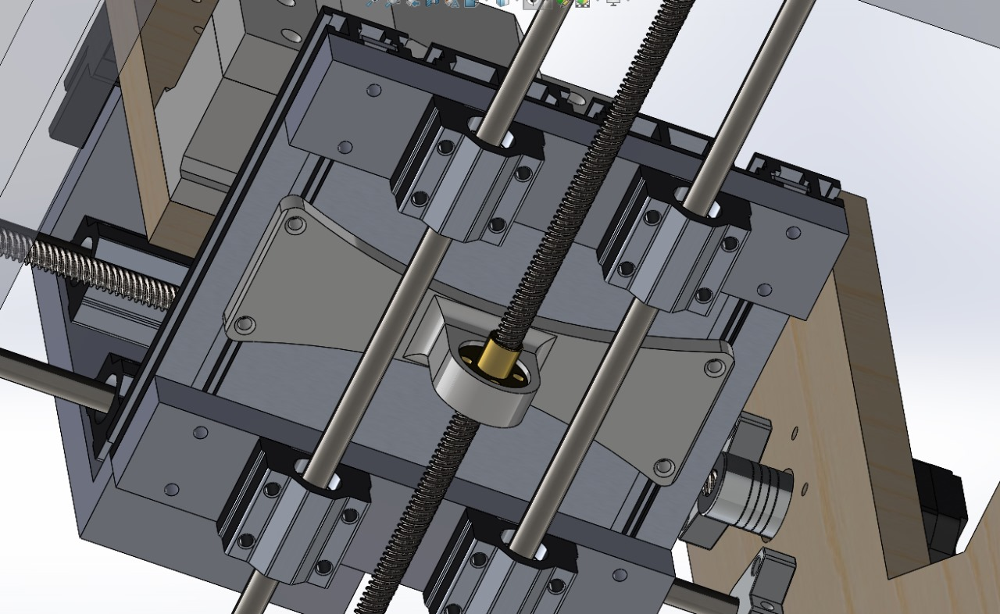
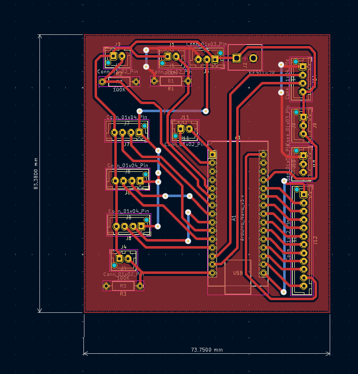
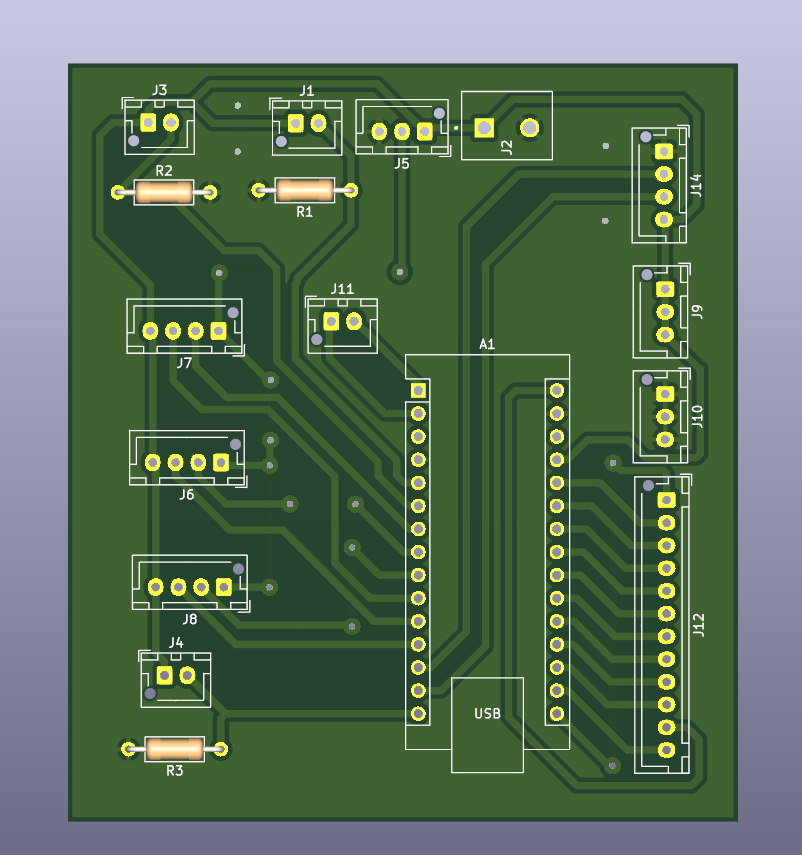
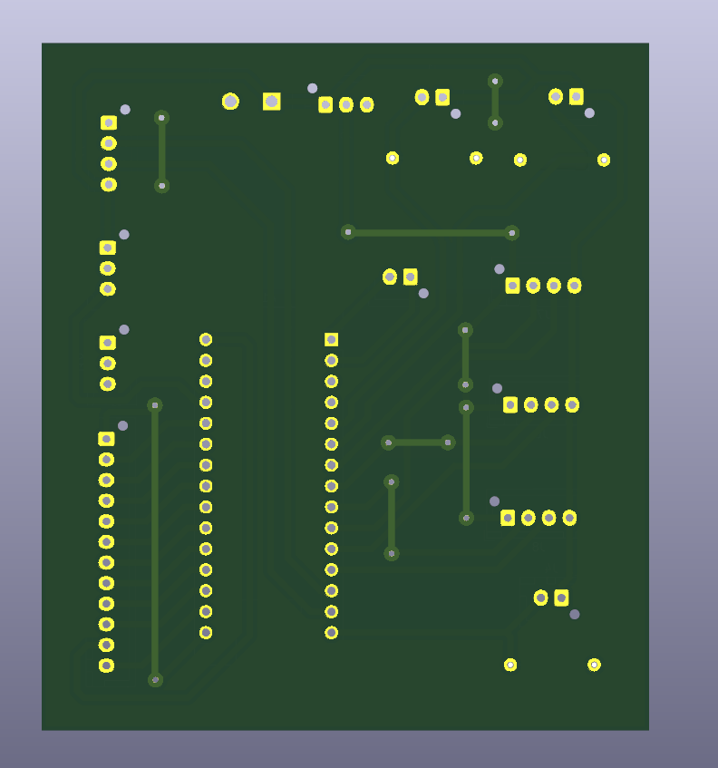
Assembly
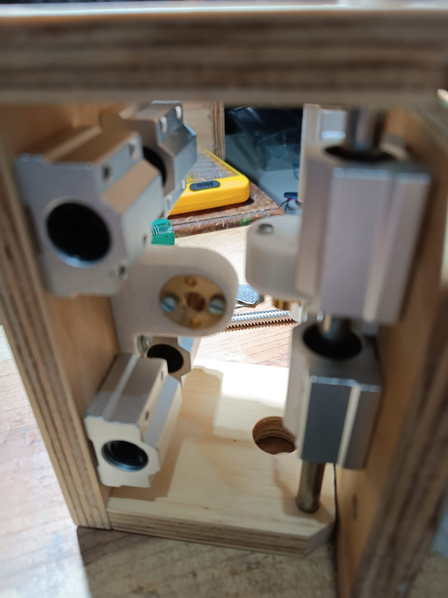
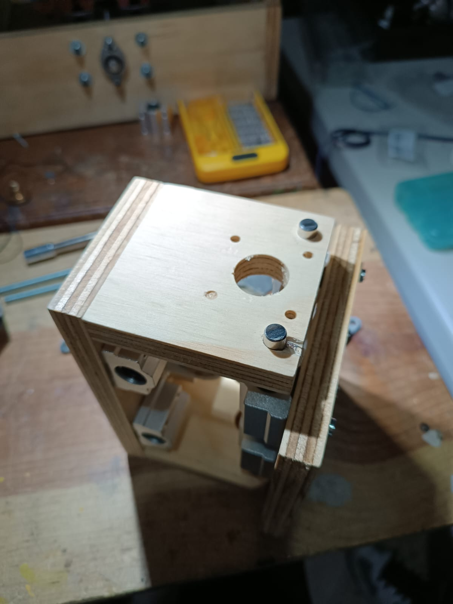
Results
Successfully designed and fabricated a functional CNC milling machine with a 150 mm × 150 mm working area. The machine achieves a positioning precision of 0.1 mm and a maximum feed rate of 2500 mm/min while machining soft materials such as wood, plastics, and Bakelite. The completed system includes an intuitive control application for manual operation and G-code execution, along with integrated safety mechanisms that prevent travel beyond the defined workspace.
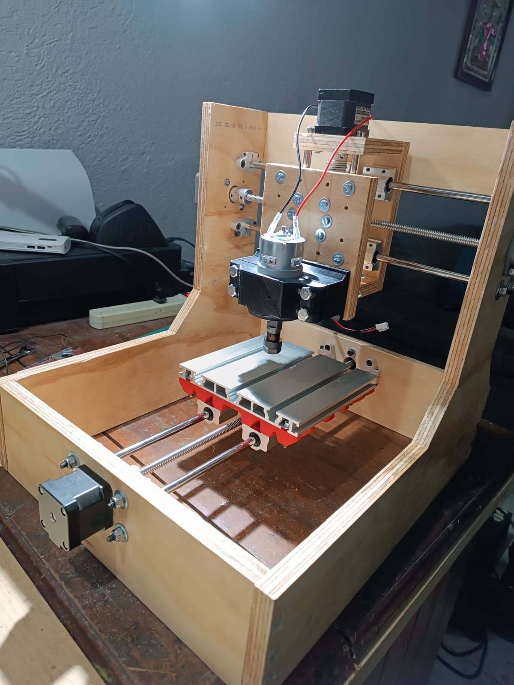
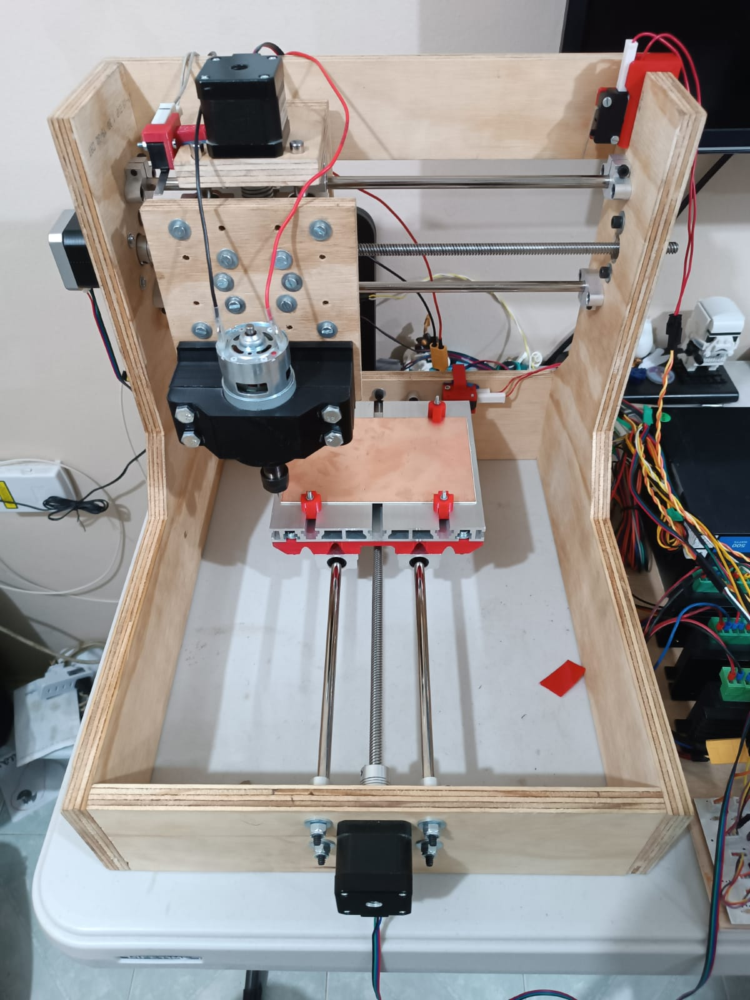
Project Repository
https://github.com/YiyoChimal/CochesAutonomos__DonkeyCars_UAX
.Year: 2024